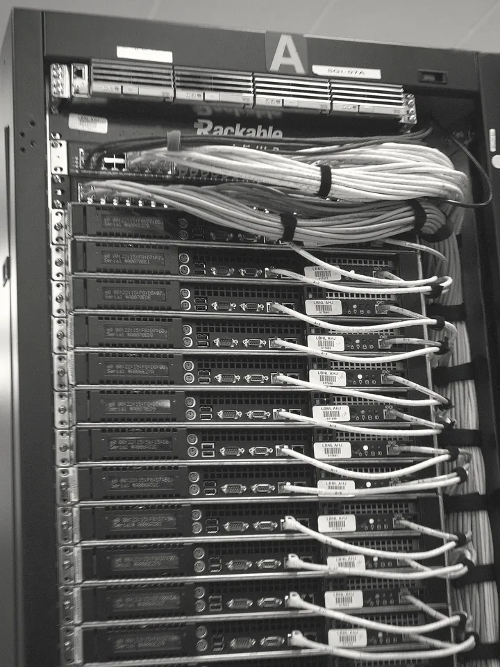
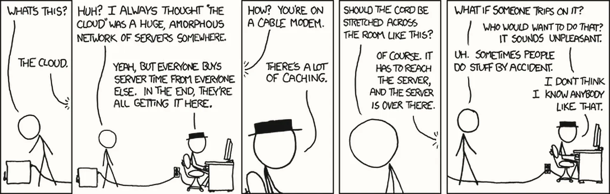
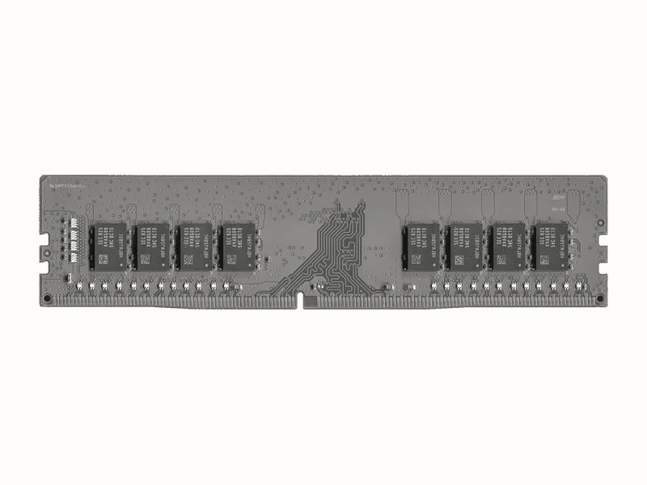
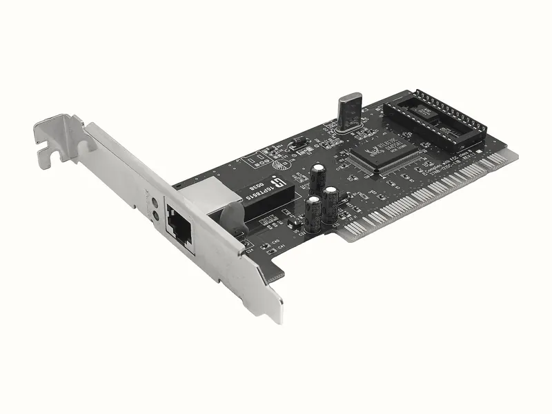
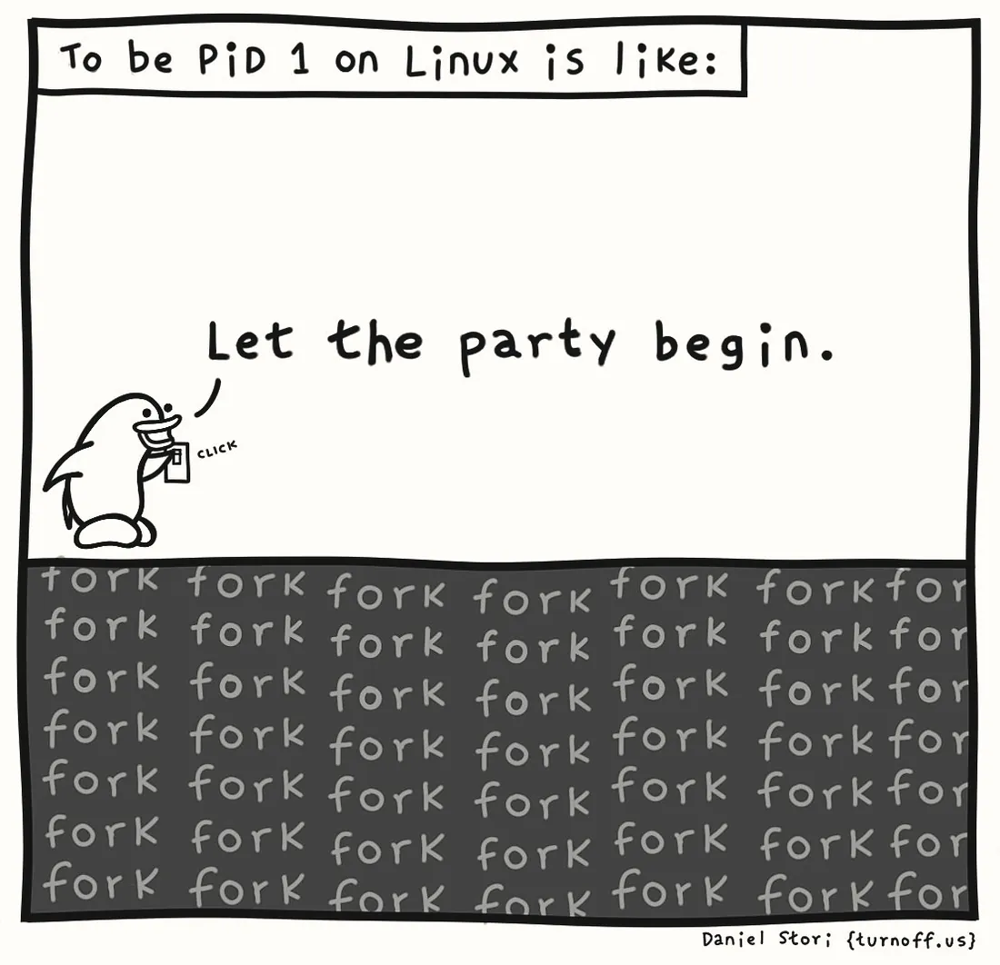
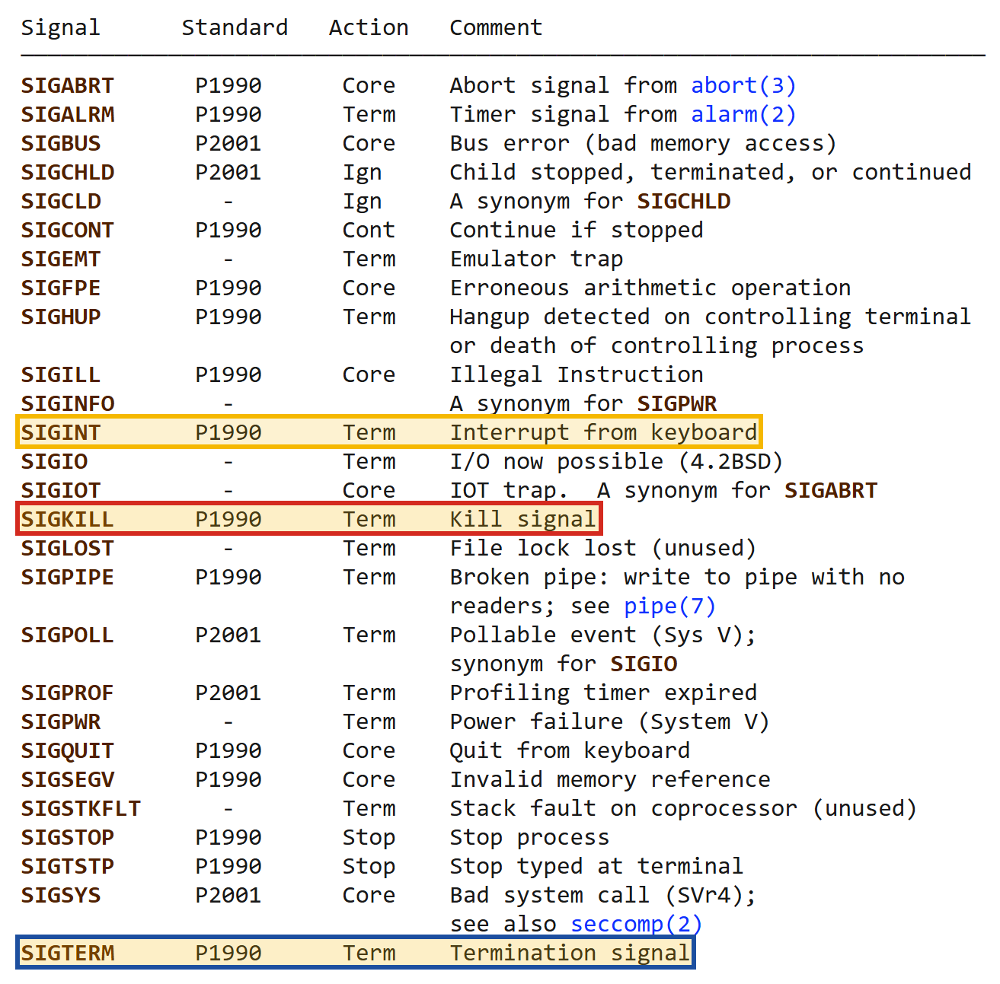
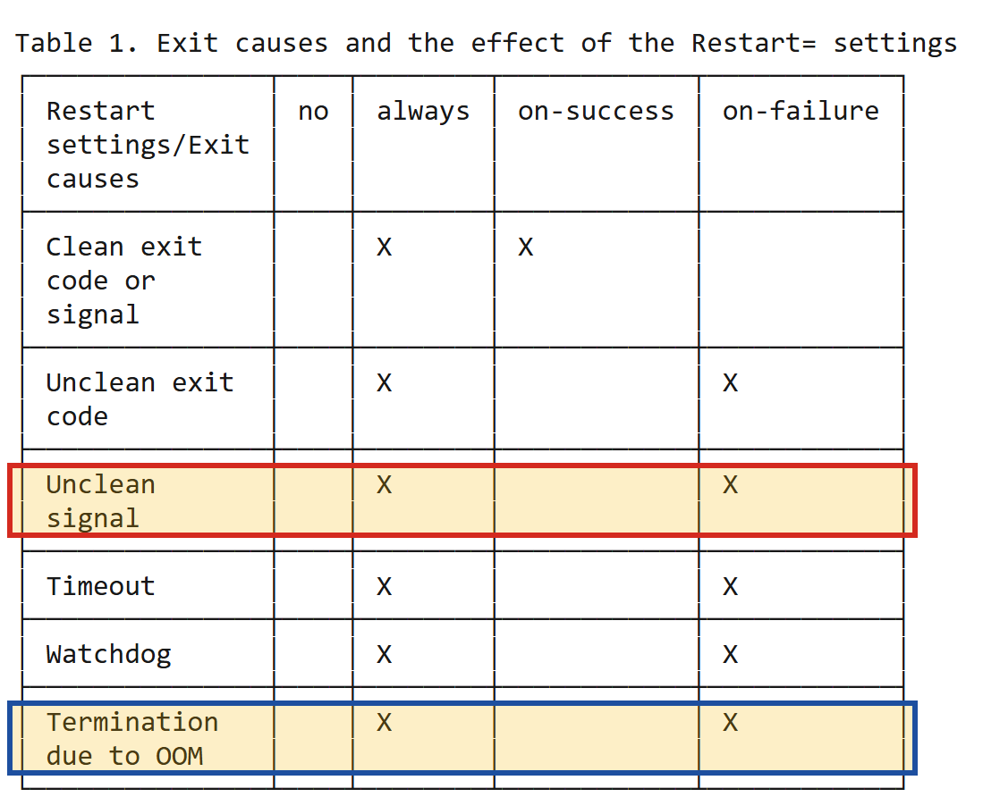
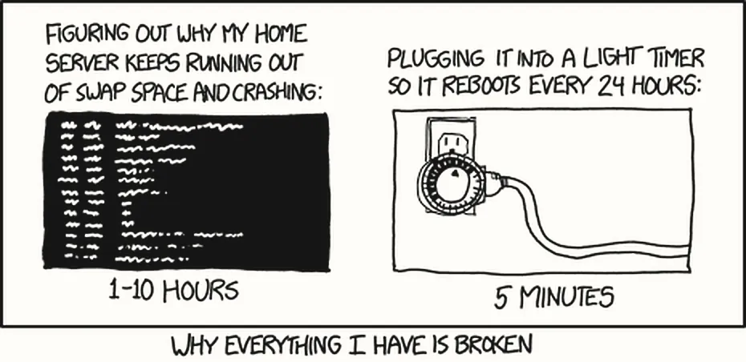

Bài 02 kết thúc ở một câu hỏi: 502 nghĩa là phía sau Nginx không còn ai trả lời. Nhưng "app" là gì trên một máy chủ, vì sao nó có thể chết, và vì sao nó chết thì website sập? Bài 02 cho biết ai viết ra mã lỗi. Bài này đi xuống tầng bên dưới để tìm vì sao phía sau Nginx lại trống.
Có một chỗ mình nghĩ sai lúc học tới đây, nên mình lấy nó làm điểm bắt đầu. Lúc cao điểm web trả 502, mình đoán là RAM đầy rồi nên app không còn chỗ để khởi động, muốn khởi động lại thì phải tắt bớt chương trình khác. Đoán vậy sai ở đâu? Sai thứ tự. RAM hết đúng là gốc, nhưng app đang chạy thì bị hệ điều hành giết để lấy RAM về, chứ app có xin chỗ đâu mà không được. Khởi động lại chỉ là tạo một bản mới vào chỗ vừa trống.
Mình chỉ thấy rõ chuyện này khi đi từng đoạn, từ lúc RAM hết cho tới lúc người dùng thấy 502. Bài này đi đúng đường đó, nhưng bắt đầu từ một câu nhỏ hơn.
Giả sử bạn đưa app Spring Boot với PostgreSQL lên server thật. Bên cho thuê máy hỏi bạn lấy cấu hình nào. Có hai phương án. Các con số trong đó đo những thứ mà lúc viết code backend ít khi phải nghĩ tới:
Phương án A 2 vCPU · 2 GB RAM · 40 GB SSD
Phương án B 4 vCPU · 8 GB RAM · 80 GB SSDCái mình muốn biết là ba con số này cái nào hết trước, và hết rồi thì hệ thống hỏng kiểu gì.
Không trả lời được câu đó thì sao? Thì chỉ còn hai đường, hoặc xin cấu hình lớn cho chắc, hoặc xin nhỏ rồi gặp sự cố mà không biết tại sao. Thứ còn thiếu là hiểu bên trong một server có những gì, và khi một thứ hết thì nó kéo theo những thứ khác ra sao.
Câu hỏi của bài, tách thành ba câu
Tình huống trên và câu hỏi Bài 02 để lại là cùng một chuyện. Vì muốn biết con số nào hết trước và hết thì hỏng ra sao, phải biết "app" trên server là gì, nó sống nhờ cái gì và chết theo cách nào. Do vậy câu hỏi của bài tách ra ba câu nhỏ, câu sau dựa vào câu trước:
- Chọn cấu hình server thì cái nào trong ba con số hết trước?
- Sao RAM hết thì app chết, còn CPU bị dùng hết thì app chỉ chậm?
- Sao app chết thì website sập, tính từ phần cứng tới con số 502 người dùng thấy?
Trả lời xong câu cuối thì còn một câu nữa: app chết rồi thì ai dựng nó dậy? Mấy tab sau đi đúng thứ tự đó, từ bốn tài nguyên của máy, tới process, kernel, cách một process chết, rồi service.
Cần đã học trước
Bài này dùng lại những khái niệm dưới đây mà không giảng lại. Dòng nào còn mơ hồ thì mở lại đúng chỗ đã học trước khi đọc tiếp.
- Bản đồ chín chặng, và đoạn Nginx chuyển request vào app: trên server, Nginx đứng trước app (Bài 00).
- Port và listen: một port chỉ nhận kết nối khi có một chương trình đang listen ở đó (Bài 01).
- Refused và timeout: refused là máy đích trả lời ngay rằng không có chương trình nào listen; timeout là không có ai trả lời cả (Bài 01).
- 502 và 504 do Nginx viết: 502 khi phía sau không trả lời, 504 khi phía sau trả lời quá chậm (Bài 02).
- Hệ thống hỏng mà không ai đụng vào, và đã chạy chưa phải đã sẵn sàng (Bài 02).
"Server" là gì
Cả ba câu hỏi đều xảy ra trên một server, vậy server là gì?

Từ "server" có hai nghĩa. Theo nghĩa phần mềm, server là một chương trình chờ nhận yêu cầu rồi trả lời, ví dụ Nginx là một HTTP server và PostgreSQL là một database server. Theo nghĩa phần cứng, server là cái máy mà những chương trình đó chạy trên đó. Ở đây nói về nghĩa thứ hai, và kết luận khá đơn giản: một server là một máy tính bình thường. Nó có CPU, RAM, ổ đĩa, card mạng, y hệt chiếc laptop bạn đang dùng. Kể cả khi nó là một máy ảo cắt ra từ một máy lớn hơn, phần mềm bên trong vẫn thấy một máy tính đầy đủ.
Truyện ở Ảnh 2 nói cùng điều đó về "cloud", chữ người ta dùng khi thuê server của người khác qua mạng.


Nếu phần cứng giống nhau thì server khác laptop ở đâu? Khác ở hoàn cảnh sử dụng, và hoàn cảnh đó khác nhau đúng ba điểm.
| Laptop của bạn | Server | |
|---|---|---|
| Thời gian chạy | bật khi làm việc | 24/7, không bao giờ tắt |
| Màn hình, bàn phím | có | không có gì cả (headless) |
| Người ngồi trước nó | bạn | không ai |
Hai điểm đầu dễ thấy hậu quả. Vì chạy 24/7 nên những thứ tích lại theo thời gian, như log, rò rỉ bộ nhớ, chứng chỉ sắp hết hạn, có đủ thời gian để gây sự cố. Đó đúng là chuyện "hệ thống hỏng mà không ai đụng vào" ở Bài 02. Còn vì không có màn hình (headless) nên bạn phải điều khiển nó qua mạng bằng dòng lệnh. Điểm thứ ba thì kéo theo nhiều hơn cả.
Không có ai ngồi trước server. Trên laptop, chính bạn làm việc giám sát: chương trình treo thì bạn tắt đi và khởi động lại; có thông báo lỗi thì bạn nhìn thấy ngay. Trên server không ai làm việc đó: một chương trình chết lúc hai giờ sáng sẽ nằm nguyên như thế cho tới khi có người phát hiện.
Nên rất nhiều công cụ vận hành sinh ra để tự động hoá những việc một người ngồi trước máy sẽ làm: khởi động lại chương trình khi nó chết, kiểm tra xem nó còn trả lời không, báo động khi nó hỏng. Ý này quay lại ở tab Service, ở câu hỏi ai dựng app dậy.
Bốn tài nguyên của một máy tính
Hai phương án ở tình huống mở bài chênh nhau ở ba con số. Ba con số đó đo cái gì, và cái nào hết trước?
Chúng đo tài nguyên của máy. Máy tính nào, laptop hay server, cũng cấp cho phần mềm đúng bốn loại tài nguyên. Chương trình nào chạy cũng phải tiêu thụ bốn thứ đó, và rất nhiều sự cố hiệu năng quy về việc một trong bốn thứ hết. Ba con số ở Hình 1 là ba trong bốn, còn thiếu băng thông mạng.
Chương trình có tự lấy tài nguyên cho mình được không? Không. Bên chia tài nguyên là kernel, phần lõi của hệ điều hành và là thứ duy nhất nắm quyền trên phần cứng. Tab Kernel cho thấy vì sao phải có nó.
CPU RAM Disk Network
thực thi dữ liệu đang lưu trữ truyền dữ
lệnh dùng bền vững liệu ra/vào
đo bằng đo bằng GB đo bằng GB đo bằng
số core volatile persistent Mbps
(mất điện (mất điện
là mất) vẫn còn)

- CPU Central Processing Unit · bộ xử lý
- Đơn vị thực thi lệnh. Một CPU có nhiều core, mỗi core tại một thời điểm chỉ chạy được một luồng lệnh. Trên VPS, con số "vCPU" là số core ảo mà máy ảo được chia, không phải số chip vật lý.
- RAM Random Access Memory · bộ nhớ trong
- Nơi chứa dữ liệu và mã lệnh đang được dùng. Nhanh hơn ổ đĩa nhiều bậc độ lớn, nhưng nhỏ hơn, đắt hơn, và mất sạch nội dung khi mất điện; người ta gọi tính chất đó là volatile.
- Disk ổ lưu trữ · SSD/HDD
- Nơi lưu dữ liệu bền vững (persistent): file chương trình, database, log. Tắt máy vẫn còn, nhưng truy cập chậm hơn RAM rất nhiều.
- Network card mạng và băng thông
- Đường ống nối máy với thế giới bên ngoài. Dung lượng của nó đo bằng băng thông (bao nhiêu dữ liệu mỗi giây) và giới hạn bởi bộ đệm của card mạng lẫn của kernel.
Với câu hỏi của bài, thứ cần để ý là quan hệ giữa bốn tài nguyên. CPU chỉ xử lý dữ liệu đang nằm trong RAM, chứ không làm việc trực tiếp với ổ đĩa, nên muốn dùng một file thì chương trình phải đọc nó từ đĩa vào RAM trước. Khoảng 30 giây Spring Boot khởi động chính là để làm việc đó: JVM đọc hàng nghìn file class vào RAM, khởi tạo các bean, mở sẵn connection tới database. Vì vậy khi RAM đã được cấp hết thì chương trình không còn chỗ đặt dữ liệu nó cần, và công việc không chạy tiếp bình thường được.
Ẩn dụ hỗ trợ ghi nhớ: người, mặt bàn, cái tủ
Quan hệ vừa nêu dễ nhớ hơn qua một phép so sánh. Đây là ẩn dụ chứ không phải định nghĩa. Thử hình dung một văn phòng.
- Ổ đĩa là cái tủ hồ sơ đặt dưới kho. Nó chứa được rất nhiều, rẻ, bền, nhưng mỗi lần muốn lấy một tập hồ sơ thì phải đi xuống kho tìm.
- RAM là mặt bàn làm việc. Nó nhỏ hơn cái tủ rất nhiều, nhưng thứ gì đặt trên bàn thì với tay là tới.
- CPU là chính người nhân viên. Người này chỉ làm việc được với những gì đang nằm trên bàn, không bao giờ làm trực tiếp với hồ sơ còn trong tủ.
| Là gì | Tính chất | Tắt điện | |
|---|---|---|---|
| Disk | cái tủ hồ sơ trong kho | To, rẻ, chậm | còn nguyên |
| RAM | mặt bàn làm việc | Nhỏ, đắt, nhanh | sạch trơn |
| CPU | chính người làm việc | Chỉ làm được với thứ đang trên bàn | không giữ gì |
Trong ẩn dụ này, quy luật "CPU chỉ làm việc với dữ liệu trong RAM" thành "muốn dùng hồ sơ nào thì phải bê nó từ tủ lên bàn trước", còn hết RAM thành "mặt bàn hết chỗ".
Hình ảnh "một người, một cái bàn" gợi ý rằng mỗi lúc chỉ có một việc đang chạy. Thực tế một CPU nhiều core chạy song song thật sự, và ngay trên một core, kernel còn luân phiên hàng trăm chương trình với nhau nhanh tới mức bạn tưởng chúng chạy cùng lúc; mục ngay dưới đây nói kỹ hơn về việc luân phiên này.
Ẩn dụ cũng bỏ qua cache, bộ nhớ nhỏ nằm ngay trong con chip CPU, nhanh hơn RAM nhiều bậc. Để hiểu vì sao hết RAM thì app chết thì chưa cần tới nó, nhưng đừng mang ẩn dụ này đi tối ưu hiệu năng cấp thấp.
Bốn tài nguyên hết theo bốn kiểu rất khác nhau
Bốn tài nguyên hết thì có hỏng giống nhau không? Không, chúng khác nhau cả về lượng lẫn cách hỏng, và mỗi loại khi hết sinh ra một kiểu triệu chứng riêng. Nhờ vậy nhận ra kiểu triệu chứng là đã khoanh được lý do, trước cả khi mở log.
| Tài nguyên | Hết thì chuyện gì xảy ra | Mức độ |
|---|---|---|
| CPU | Công việc xếp hàng chờ. Không ai chết, chỉ chậm dần. | Chậm |
| RAM | Kernel giết một process để lấy lại chỗ | Chết |
| Disk | Không ghi được gì nữa. Log tắt, DB không commit được. | Lỗi rất lạ |
| Network | Gói tin bị vứt bỏ | Timeout |
Vì sao hết CPU chỉ làm chậm? Vì thời gian của CPU là thứ chia nhau theo lượt. Bộ lập lịch (scheduler) của kernel cho mỗi chương trình chạy một khoảng rất ngắn rồi chuyển sang chương trình khác, và nó chuyển nhanh tới mức nhìn từ ngoài thì các chương trình như chạy cùng lúc. Khi có quá nhiều việc thì không việc nào bị huỷ. Hàng đợi chỉ dài ra, và mỗi việc phải chờ lâu hơn mới tới lượt.
Còn vì sao hết RAM thì phải có chương trình chết? Vì RAM là thứ chiếm giữ, ngược với CPU. Một byte đã cấp cho chương trình này thì chương trình khác không dùng được cùng lúc. Khi RAM đã cấp hết thì có chờ cũng không được gì, vì không chương trình nào tự trả lại phần bộ nhớ nó đang giữ. Kernel buộc phải chọn một chương trình và giết nó để lấy lại vùng RAM nó đang chiếm.
Hai tài nguyên còn lại hỏng theo kiểu khác nữa. Ổ đĩa đầy thì chương trình vẫn sống, nhưng mọi thao tác ghi đều
thất bại với lỗi No space left on device, nên log ngừng ghi và database từ chối commit. Mạng quá tải
thì gói tin bị vứt bỏ, và phía gửi chỉ thấy im lặng cho tới khi hết thời gian chờ, tức timeout ở Bài
01.
Hết CPU thì app chậm. Hết RAM thì app chết.
Nối về bản đồ chín chặng: 504 và 502
Hai kiểu hỏng của CPU và RAM hiện ra thế nào trên bản đồ, ở đoạn Nginx chuyển request vào Spring Boot?
Khi máy hết CPU thì Spring Boot vẫn sống và vẫn nhận request. Nhưng mỗi request phải xếp hàng chờ CPU, nên câu trả lời tới quá chậm. Nginx đợi hết khoảng thời gian nó được cấu hình để đợi, rồi tự viết trang lỗi 504 Gateway Timeout.
Khi máy hết RAM thì Spring Boot bị giết, nên không còn chương trình nào listen port 8080. Nginx xin kết nối tới đó và bị từ chối ngay, rồi tự viết trang lỗi 502 Bad Gateway.
Hết CPU → app còn sống nhưng trả lời quá chậm
↓
Nginx đợi hết thời gian chờ đã cấu hình
↓
504 Gateway Timeout
Hết RAM → app bị giết, không còn ai listen 8080
↓
Nginx xin kết nối, bị từ chối
↓
502 Bad GatewayGiờ quay lại tình huống mở bài được rồi. Với Spring Boot và PostgreSQL, con số thường hết trước là RAM, vì cả JVM lẫn PostgreSQL đều chủ động giữ nhiều bộ nhớ để chạy nhanh, còn CPU của một app web nhỏ thì phần lớn thời gian ngồi chờ database và mạng. Đây là nhận định "thường thì", không phải "luôn luôn". Một app xử lý ảnh hay mã hoá nặng có thể hết CPU trước, và cách duy nhất để biết chắc là đo.
Chương trình và process
Thứ bị kernel giết khi hết RAM là thứ gì? Tab trước gọi nó là "chương trình", và Bài 01 cũng nói Nginx gọi tới "chương trình đang listen port 8080". Chữ đó đã dùng hai lần mà chưa định nghĩa, nên muốn biết vì sao app chết thì website sập thì phải bắt đầu từ nó.
Câu trả lời nằm ở chỗ khác nhau giữa một chương trình và một process. File
app.jar mà Maven build ra là một chương trình, tức một file nén chứa bytecode, nằm yên trên ổ đĩa. Nó
không chiếm port nào, không trả lời ai và không tốn CPU. Mọi thứ đổi khi bạn gõ lệnh dưới đây.
java -jar app.jarLúc bạn nhấn Enter thì chuyện gì xảy ra? Cửa sổ dòng lệnh có một chương trình đang nhận lệnh bạn gõ, thường là
bash, và bash yêu cầu kernel tạo ra một thực thể mới. Kernel cấp cho thực thể đó ba thứ, gồm một vùng
RAM riêng, một con số định danh, và một danh sách riêng ghi những file và kết nối nó đang mở. Rồi kernel nạp mã của
JVM vào và cho nó chạy. Thực thể đang sống đó mới là thứ listen port 8080, trả lời request, và có thể chết.
Một process (tiến trình) là một chương trình đang được thực thi.
Chuẩn POSIX định nghĩa chặt hơn. (POSIX là bộ chuẩn chung mà các hệ điều hành họ Unix, trong đó có Linux, cùng tuân theo.) Theo chuẩn này, process là một không gian địa chỉ (address space), cùng với một hoặc nhiều thread đang chạy bên trong không gian đó, và các tài nguyên hệ thống mà những thread ấy cần.
Từ đó suy ra ngay: cùng một chương trình có thể chạy thành nhiều process độc lập cùng lúc. Gõ
java -jar app.jar hai lần là có hai process, mỗi process một PID và một vùng RAM riêng.
app.jar trên đĩa → process đang chạy
──────────────── ─────────────────
một file, nằm im PID 4123
không chiếm gì chiếm 800 MB RAM
không ai gọi được đang listen port 8080
copy được, xóa được kill được, và chết là hếtỞ Bài 01, một port chỉ nhận kết nối khi có một chương trình đang listen ở đó. Giờ gọi được đúng tên thứ đó: chương trình đang listen port 8080 chính là process này. Và nó có một định danh: một con số gọi là PID, do kernel cấp.
PID và cây process
Kernel gọi tên từng process bằng gì? Bằng một con số nguyên gọi là PID (process identifier). PID được cấp khi process sinh ra và thu hồi khi process chết. Vì vậy PID không phải định danh cố định của app, khởi động lại Spring Boot là có một PID mới.
Còn process mới thì từ đâu ra? Trên Unix và Linux, nó luôn do một process đang tồn tại tạo ra, qua hai bước:
- Lời gọi
fork()nhân bản process hiện tại thành một bản sao, gọi là process con. - Process con gọi
execve()để thay chương trình của mình bằng một chương trình khác.
Vậy khi bạn gõ java -jar app.jar trong bash thì chính bash fork ra một bản sao của nó, rồi bản sao
đó exec thành java. Vì process nào cũng có cha nên mọi process trên máy gộp lại thành một
cây.
| Khái niệm | Là gì |
|---|---|
| PID | Số định danh của process. Kernel cấp khi sinh, thu lại khi chết. Không cố định: restart app là có PID mới. |
| PPID | PID của process cha. Mọi process đều được sinh ra bởi một process khác. |
| PID 1 | Gốc của cây. Process đầu tiên kernel tạo khi máy khởi động. Trên Linux thường là systemd. |
PID 1 systemd
├── PID 892 sshd
│ └── PID 3301 bash ← terminal bạn đang gõ
│ └── PID 4123 java -jar app.jar
├── PID 901 nginx (master)
│ ├── PID 902 nginx (worker) ← chạy bằng user thường
│ └── PID 903 nginx (worker)
└── PID 1024 postgresGốc cây là PID 1, và Ảnh 4 tả công việc của nó trong một khung tranh.

Nhánh thứ nhất của cây có một cái tên chưa gặp. Server không có màn hình, nên người ta điều khiển nó từ xa bằng
SSH (Secure Shell), tức là lệnh gõ trên máy bạn được mã hoá, gửi qua mạng và chạy trên
server. Phía server có process sshd listen port 22, và mỗi lần bạn đăng nhập thì nó sinh ra một
bash riêng cho bạn. Quãng từ lúc đăng nhập tới lúc ngắt kết nối gọi là một phiên SSH.
Nhánh sshd bash java nói lên điều gì? Nó cho thấy app là con cháu của phiên
SSH bạn đăng nhập, nên phiên đó đóng không khéo thì app có thể bị kéo chết theo. Đó là một lý do để không chạy app
production bằng cách gõ tay, và tab Service nói cách chạy đúng.
Nhánh nginx thì cho thấy một master và nhiều worker. Vì sao phải tách ra như vậy?
Trên Linux, chỉ process chạy bằng root, tài khoản có toàn quyền trên máy, mới được listen các port dưới
1024, trong đó có port 443 của HTTPS. Vì vậy master chạy bằng root để mở port 443. Còn các worker xử lý request thì
chạy bằng một user thường, để nếu worker bị khai thác thì kẻ tấn công chỉ có quyền của user đó. Bên kiểm tra quyền
là kernel, chủ đề của tab sau.
Mỗi process sở hữu những gì
Ngoài PID, kernel còn gắn gì cho mỗi process? Một bộ thuộc tính riêng, như Hình 6 vẽ. Bài này cần cả năm thuộc tính:
- Vùng RAM riêng: thứ kernel thu hồi khi giết process vì hết RAM.
- Danh sách file và kết nối đang mở: nơi ghi port 8080 thuộc về process. Nên process chết thì port trống.
- Thư mục làm việc: giải thích một lỗi ở Lab 1.
- User: quyết định kernel cho process làm gì.
- Biến môi trường: cách đưa cấu hình vào app (Lab 6).
Năm thuộc tính đó xem được ở đâu? Trên Linux, kernel dựng ra cho mỗi process một thư mục ảo
/proc/<PID>/, và từng thuộc tính nằm trong đó. Ví dụ environ chứa biến môi trường,
còn cwd trỏ tới thư mục làm việc.
PID 4123 java -jar app.jar
│
├── vùng RAM riêng ← không đọc được RAM của process khác
├── file đang mở ← gồm cả các kết nối mạng
├── thư mục làm việc (cwd) ← đường dẫn tương đối tính từ đây
├── biến môi trường riêng ← SPRING_DATASOURCE_PASSWORD sống ở đây
└── user chạy nó ← quyết định nó được đọc/ghi file nàoDòng đầu tiên của Hình 6 là lý do các process bị cô lập với nhau. Mỗi process thấy một không gian địa chỉ ảo của riêng nó (virtual memory), nên cùng một địa chỉ trong hai process thì trỏ tới hai vị trí vật lý khác nhau. Nhờ vậy process A không đọc được mật khẩu nằm trong RAM của process B. Còn hai dòng cuối của hình thì kéo theo hai điều dùng được ngay.
Biến môi trường là thuộc tính của process, không phải của máy. Process
con nhận một bản sao biến môi trường của cha lúc được sinh ra; từ đó hai bản sống độc lập.
Nên export trong một terminal không ảnh hưởng terminal khác (Lab 6), và đây là cách
mật khẩu hay địa chỉ database được đưa vào app mà không ghi cứng trong code.
User chạy process quyết định nó phá được gì. Mọi quyết định cho phép hay từ
chối truy cập file đều được kernel đưa ra dựa trên user của process. App chạy bằng
root mà có lỗ hổng thì kẻ tấn công có cả máy; app chạy bằng một user riêng thì kẻ tấn
công chỉ có đúng phần của user đó.
Process và thread
Nếu mỗi process có vùng nhớ riêng thì làm sao Spring Boot phục vụ hàng trăm request cùng lúc? Câu trả lời là thread (luồng), và nó cũng giải thích luôn vì sao một lỗi bộ nhớ ở một chỗ nhỏ có thể kéo chết cả app. Thread là một dòng thực thi độc lập bên trong một process. Nó có con trỏ lệnh và ngăn xếp (stack) riêng, nhưng nó dùng chung vùng nhớ và danh sách file đang mở với mọi thread khác của process đó.
Process = một vùng nhớ riêng + các thuộc tính riêng.
Không đọc được vùng nhớ của process khác.
Thread = một dòng thực thi bên trong process,
dùng chung vùng nhớ với các thread khác.Vậy Spring Boot của bạn là một process với hàng trăm thread. Theo mô hình truyền thống, Tomcat nhúng bên trong giữ một pool thread và giao mỗi HTTP request cho một thread trong pool. Virtual thread của Java 21 không đổi điều này, vì chúng vẫn nằm trong cùng một process. Dùng chung vùng nhớ như vậy vừa là cái lợi vừa là cái rủi ro.
| Điều kéo theo | Vì sao |
|---|---|
| Giết process là giết tất cả thread | Không có chuyện "giết một request": kernel dừng mọi thread và thu hồi vùng nhớ chung của process. |
| Một thread làm tràn RAM thì cả process chết | Các thread dùng chung vùng nhớ, nên OOM killer giết cả process, không giết riêng thread gây ra. |
| Thread rẻ hơn process rất nhiều | Tạo thread không phải dựng một vùng nhớ mới như tạo process |
Điều thứ hai trong Bảng 5 giải thích một chuyện khó hiểu nếu chỉ nhìn từ code. Chỉ một endpoint có lỗi, kiểu một API xuất báo cáo nạp cả bảng dữ liệu vào bộ nhớ, cũng đủ làm sập cả app, và mọi endpoint khác vốn hoàn toàn khoẻ cũng sập theo. Lý do là giữa các thread không có vách ngăn nào về bộ nhớ. Đó là cái giá của việc chúng dùng chung bộ nhớ để trao đổi dữ liệu nhanh.
Tới đây trả lời được "app" là gì. "App" là một process, tức chương trình app.jar
khi đang chạy. Kernel cấp cho nó một PID, một vùng RAM riêng, và một danh sách file và kết nối đang mở, trong đó có
port 8080 mà Nginx gọi tới. Process đó chứa nhiều thread dùng chung vùng nhớ, nên giết process là giết mọi request
đang xử lý dở.
Vì sao Spring Boot không tự ghi thẳng vào ổ cứng?
Giữa cái chết của một process và con số 502 còn thiếu một mắt xích. Ai giữ quan hệ giữa port 8080 và process đang listen nó, và vì sao process chết thì quan hệ đó biến mất ngay? Người giữ là kernel, thứ đã được nhắc tên từ Bài 01 mà chưa được giải thích.
Vì sao phải có kernel? Thử giả sử mọi chương trình đều được chạm thẳng vào phần cứng. Khi đó một app lỗi có thể ghi đè vùng RAM của app khác. Hai app cùng ghi vào một vị trí trên đĩa thì làm hỏng dữ liệu của nhau. Một app độc hại thì đọc được mật khẩu trong bộ nhớ của app khác. Vì vậy phải có một lớp trung gian nắm độc quyền phần cứng, đứng giữa mọi chương trình và máy, và quyết định ai được làm gì. Lớp đó là kernel.
Kernel (nhân hệ điều hành) là phần lõi của hệ điều hành. Nó chạy ở chế độ đặc quyền của CPU (kernel mode) và là thành phần duy nhất được phép thao tác trực tiếp với phần cứng.
Mọi chương trình còn lại chạy ở chế độ hạn chế (user mode), trong một vùng gọi chung là user space. Kể cả những thứ trông rất "hệ thống" như bash hay Nginx cũng vậy.
Chính CPU cưỡng chế sự phân tách này bằng các mức đặc quyền của phần cứng. Nên một chương trình ở user mode không thể thực thi lệnh đặc quyền.
┌──────────────── user space ─────────────────┐
│ │
│ Spring Boot Nginx PostgreSQL bash │ ← không được
│ │ chạm phần cứng
└───────────────────────┬─────────────────────┘
│
syscall ← cách duy nhất để nhờ kernel làm hộ
│
┌───────────────────────▼─────────────────────┐
│ kernel │ ← độc quyền phần cứng
└───────────────────────┬─────────────────────┘
▼
CPU RAM Disk Networksyscall: app không tự làm, nó xin kernel làm hộ
Chương trình không được chạm phần cứng, vậy làm sao nó đọc được file hay mở được kết nối mạng? Nó phải xin kernel làm hộ. Cách xin đó gọi là system call, thường viết tắt là syscall, và một syscall diễn ra qua bốn bước:
- Chương trình ghi yêu cầu của mình vào một chỗ đã quy ước sẵn.
- Nó thực thi một lệnh CPU đặc biệt để chuyển quyền điều khiển sang kernel.
- Kernel kiểm tra yêu cầu có hợp lệ không và process có quyền không, rồi thực hiện.
- Kernel trả kết quả về và cho chương trình chạy tiếp ở user mode.
Có bao nhiêu syscall cả thảy? Linux có vài trăm cái khác nhau, nhưng những cái quan trọng với người vận hành thì chỉ gói trong vài nhóm.
| Nhóm | syscall | App đang xin gì |
|---|---|---|
| File | open read write close | "Mở hộ tôi file này" |
| Mạng | socket bind listen accept | "Ghi nhận port 8080 cho tôi" |
| Process | fork execve kill | "Tạo hộ tôi một process mới" |
| Bộ nhớ | mmap brk | "Cấp thêm bộ nhớ cho tôi" |
Code Java của bạn có gọi mấy syscall này không? Không gọi trực tiếp bao giờ. Khi bạn viết
new FileInputStream(f), lời gọi đi qua thư viện chuẩn của Java, xuống mã native của JVM, xuống thư viện
C của hệ điều hành, rồi mới tới syscall open. Nhưng đi qua bao nhiêu lớp thì đích cuối vẫn là một lời
xin gửi tới kernel. Vì vậy khi kernel từ chối một lời xin, lỗi của nó đi ngược qua chừng ấy lớp rồi hiện ra trong
log của bạn. Mục dưới đây cho thấy một ví dụ.
Kernel giữ bảng các port đang listen
Một trong những thứ kernel quản lý là quan hệ giữa port và process. Khi Spring Boot "listen ở port 8080" thì nó
làm gì với kernel? Nó gọi bind() rồi listen(), hai syscall nhóm Mạng ở Bảng 6, tức là
xin kernel ghi nhận rằng port 8080 thuộc về process này.
Nhận lời xin đó, kernel thêm một dòng vào bảng các port đang listen, ghi "8080 PID 4123". Từ lúc đó, mọi kết nối gửi tới port 8080 đều được kernel chuyển cho đúng
process ấy. Lệnh netstat ở Lab 2 in ra chính bảng này.
Cái bảng đó giải thích được ba hiện tượng mà bạn sẽ gặp đi gặp lại:
Address already in use → kernel tra bảng: 8080 đã thuộc process khác
kill process → refused → process chết, kernel xóa dòng 8080 ngay
port <1024 cần root → kernel kiểm tra quyền trước khi ghi vào bảngAddress already in use nhìn từ phía kernel
Khi bind() thất bại vì port đã có process khác listen, kernel không trả về một câu chữ. Nó trả về
một mã lỗi tên EADDRINUSE. Dòng Address already in use mà Spring Boot in ra chỉ là mã đó
được dịch sang chữ cho người đọc.
Vậy dòng lỗi này là câu trả lời của kernel sau khi tra bảng các port đang listen. Nó đi qua nhiều lớp thư viện rồi mới tới log của bạn.
Process chết: được báo trước, hay bị ép
Hai câu còn dở đều quy về lúc một process chết. Hết RAM thì ai giết process, và giết thế nào? Rồi từ cái chết đó tới 502 là chuỗi nào?
Vì sao phải quan tâm process chết kiểu gì? Vì cách process chết quyết định hệ thống bị bỏ lại trong trạng thái nào. Spring Boot đang giữ connection tới database, có transaction đang dở, có log còn trong bộ đệm chưa ghi xuống đĩa. Nếu được báo trước thì nó kịp dọn, còn nếu không được báo thì những thứ đó bị bỏ lại giữa chừng.
Ai báo cho process? Process sống trong user space nên không tự biết chuyện bên ngoài, vì vậy lời báo phải đi qua kernel, bằng một kênh gọi là signal.
- Signal tín hiệu
- Một thông báo ngắn mà kernel gửi tới process vào bất kỳ lúc nào, không cần process hỏi. Mỗi signal mang một con số và một ý nghĩa quy ước. Process có thể đăng ký hàm xử lý (handler) cho phần lớn signal. Nếu không đăng ký thì mỗi signal có một hành vi mặc định. Với SIGTERM và SIGINT, mặc định là kết thúc process.
- SIGINT signal số 2
- "Ngắt": signal mà terminal gửi cho chương trình đang chạy khi bạn bấm Ctrl+C.
- SIGTERM signal số 15
- "Xin hãy kết thúc": signal mặc định của lệnh
kill. Process bắt được nó, nên có cơ hội dọn dẹp trước khi thoát. - SIGKILL signal số 9
- "Kết thúc ngay": signal không thể bị bắt, chặn hay bỏ qua. Process không bao giờ nhận được nó theo nghĩa thông thường: kernel trực tiếp xoá process.
SIGTERM và SIGKILL

signal(7) (man page là trang hướng dẫn chính thức đi kèm Linux, mỗi lệnh hay khái niệm một trang), với ba dòng khoanh: SIGINT, tín hiệu mà phím Ctrl+C gửi tới; SIGKILL, tín hiệu của kill -9; và SIGTERM, tín hiệu mặc định của lệnh kill. Cả ba có hành động mặc định Term, tức kết thúc process, nhưng chỉ SIGKILL là không bắt được, nên app không có cơ hội dọn dẹp.Cặp quan trọng nhất là SIGTERM và SIGKILL. Cả hai đều kết thúc process, vậy chúng khác nhau ở đâu? SIGTERM là một lời đề nghị gửi tới process, còn SIGKILL là một mệnh lệnh kernel tự thi hành, không hỏi process. Với SIGTERM, nếu process đã đăng ký handler, mà Spring Boot có đăng ký, thì handler chạy và app có cơ hội thu xếp. Với SIGKILL thì không handler nào được gọi. Kernel dừng mọi thread của process và thu hồi toàn bộ tài nguyên của nó.
SIGTERM process được báo trước
→ Spring Boot chạy @PreDestroy
→ đóng connection pool, trả connection về DB
→ flush log ra đĩa
→ rồi mới thoát
SIGKILL process không được báo
→ không chạy một dòng nào
→ connection treo lại ở phía database
→ transaction dở dang
→ dòng log cuối cùng mấtẢnh 6 kể lại chỗ khác nhau đó từ phía process.
![Truyện nhiều khung. This is Bob. Bob is a Linux process. Like any process, Bob has his threads, with whom he shares context, memories, and love. And like all processes, inevitably, he will be killed. When we gracefully kill a process with a soft SIGTERM, we give him the chance to talk with his kids about it, so the kids finish their tasks and say goodbye to each other. On the other hand, when we brutally kill a process with a SIGKILL, we prevent it from finishing its job and saying goodbye. So please, don't use SIGKILL. Let the kids exit the kernel gracefully. Be nice.](img/truyen-sigkill.webp)
OOM killer: kernel chọn process để giết khi hết RAM
Ở tab Bốn tài nguyên, RAM hết thì kernel phải giết một process. Phần nào của kernel làm việc đó? Phần có tên là OOM killer (Out-Of-Memory killer).
OOM killer chọn process nào để giết? Khi không còn cách nào tìm được bộ nhớ trống, kernel chấm điểm từng process,
và điểm này xem được trong /proc/<PID>/oom_score. Rồi kernel giết process có điểm cao
nhất bằng SIGKILL. Điểm chủ yếu dựa trên chuyện process nào đang chiếm nhiều bộ nhớ nhất,
vì giết nó thì một lần giết lấy lại được nhiều chỗ nhất.
Câu hỏi hợp lý: sao kernel không trả lời "hết chỗ rồi" ngay lúc chương trình xin thêm bộ nhớ, như cách nó từ chối mở một file không có quyền?
Lý do là mặc định Linux cho phép overcommit. Khi chương trình xin một vùng nhớ, kernel thường đồng ý ngay nhưng chưa cấp RAM vật lý thật. RAM thật chỉ được cấp lúc chương trình chạm tới vùng nhớ đó lần đầu. Cách này tiết kiệm rất nhiều, vì chương trình hay xin nhiều hơn mức thật sự dùng.
Cái giá là thế này. Chương trình chạm vào một vùng nhớ đã được đồng ý cấp, mà RAM vật lý không còn. Kernel không trả lỗi cho lời xin đó được nữa, vì lời xin đã được chấp nhận từ trước. OOM killer là cách cuối cùng để lấy lại RAM.
Thường là JVM. JVM giữ một vùng heap lớn cho các object của app. Nó còn cần bộ nhớ cho metaspace, cho stack của hàng trăm thread, cho mã đã được biên dịch. Nên trên một server chạy Spring Boot, JVM thường là process lớn nhất máy.
Nên khi server hết RAM, process bị giết gần như luôn là chính app của bạn. Kể cả khi thứ làm hết RAM là một process khác, kiểu một script backup chạy lúc nửa đêm. Kernel không đi tìm process gây ra sự cố. Nó tìm process mà giết đi thì lấy lại được nhiều bộ nhớ nhất.
Gom lại: năm cách một process kết thúc
Tới đây đủ khái niệm để xếp mọi cách chết vào một bảng. Cột đáng nhìn nhất là cột cuối, vì chỉ những cách chết mà process được báo trước mới cho nó cơ hội dọn dẹp, còn hai cách do kernel ép buộc thì không.
| Cách chết | Ai quyết định | Kịp dọn dẹp? |
|---|---|---|
| Tự kết thúc bình thường | chính app | |
| Exception không bắt được | chính app | các đoạn dọn dẹp đã đăng ký vẫn chạy |
SIGTERM, lệnh kill <pid> | người / hệ thống | app được báo trước |
SIGKILL, lệnh kill -9 | kernel, ép buộc | chết ngay lập tức |
| OOM killer | kernel | như SIGKILL |
Dấu hiệu nhận biết OOM, và vì sao nó khó tìm
Triệu chứng đặc trưng:
app biến mất đột ngột
log ứng dụng không có gì cả ← không một dòng lỗi, không stack trace
không ai deploy, không ai đụng vàoVì sao log của app trống trơn? Vì app bị SIGKILL. Như Bảng 7 đã chỉ ra, SIGKILL không cho process chạy thêm một dòng nào, nên framework logging không có cơ hội ghi nổi một câu "sắp dừng vì hết bộ nhớ". Vì vậy sau một vụ OOM, đi tìm stack trace trong log của app là tìm ở chỗ không thể có stack trace nào.
Log app trống không có nghĩa là không có dấu vết; dấu vết nằm ở chỗ khác. Bên giết process là kernel, và kernel tự ghi lại việc nó đã giết process nào vào log của chính nó:
dmesg | grep -i "killed process"Đây là chỗ cần tìm khi app biến mất mà log app không có gì.
Vì sao "app chết thì website sập": chuỗi đầy đủ
Giờ đã đủ khái niệm để trả lời trọn câu hỏi vì sao app chết thì website sập. Chuỗi dưới đây đi một mạch từ lúc RAM hết tới con số người dùng nhìn thấy. Mỗi bước là kết quả của bước trước, và bước nào cũng dựa trên một khái niệm đã gặp, ở bài này hoặc ở các bài trước.
1 RAM hết
↓
2 Kernel chấm điểm, chọn JVM (ăn RAM nhiều nhất)
↓
3 SIGKILL: process 4123 biến mất tức thì, không kịp log
↓
4 Kernel xóa dòng "8080 → PID 4123" khỏi bảng port
↓
5 Nginx nhận request, xin kết nối tới 127.0.0.1:8080
↓
6 Kernel tra bảng: không ai listen 8080, từ chối ← Connection refused
↓
7 Nginx dịch sang ngôn ngữ HTTP cho người dùng:
502 Bad GatewayBước 6 chính là Connection refused mà bạn đã tự tay đo ở Bài 01. Chỉ
khác là lần này nó xảy ra bên trong server, và bên nhận nó là Nginx thay cho curl.
Chuỗi này cũng cho thấy nguyên tắc "triệu chứng chứng minh các bước trước" ở Bài 02 áp vào thế nào. 502 chứng minh Nginx vẫn chạy tốt. Nhưng gốc thật là RAM hết, cách đó sáu bước, ở một tầng mà trang lỗi không nhắc tới.
Restart app thì 502 biến mất. Nhưng thứ làm RAM hết vẫn còn, nên chuỗi sẽ lặp lại.
Process và service: khác nhau ở bên trông coi
Chuỗi bảy bước ở tab trước dừng ở một app đã chết và một website trả 502. Vậy ai dựng app dậy? Với một process bình thường thì không ai cả. Process chết là hết, tự nó không có gì làm nó sống lại, cũng không có gì làm nó tự khởi động khi máy bật. Khái niệm service xuất hiện ở đúng chỗ này.
Lúc học tới đây mình đoán người dựng app dậy là một process có PID 1, và chỉ biết là khi có thứ theo dõi app, ở đây là systemd, thì app chết nó tự bật lại. Đoán vậy đúng hướng nhưng thiếu một nửa. Là con của systemd thì chưa đủ, phải khai báo với nó thì app mới thành service.

systemd.service(5): với từng kiểu chết (hàng) và từng giá trị Restart= (cột), dấu X cho biết systemd có dựng process dậy lại hay không. Dòng khoanh đỏ là trường hợp của kill -9, một tín hiệu "không sạch"; dòng khoanh lam là OOM killer. Cả hai đều được Restart=on-failure khởi động lại; đó chính là chính sách trông coi biến một process thành một service.Một service (trong truyền thống Unix còn gọi là daemon) là một process chạy nền, không gắn với terminal nào, và được một process khác trông coi.
Người trông coi đó (supervisor) lo ba việc: khởi động service khi máy bật, theo dõi nó trong lúc chạy, và dựng nó dậy khi nó chết, theo một chính sách định trước.
Trên các bản phân phối Linux hiện đại, người trông coi mặc định là systemd. Nó chính là PID 1 ở gốc
cây process trong Hình 5.
| Process | Service | |
|---|---|---|
| Là gì | một chương trình đang chạy | một process + một người trông coi |
| Chết thì sao | hết. Không ai dựng dậy. | tự được khởi động lại |
| Máy khởi động lại | không tự chạy | tự chạy |
| Ai trông | không ai | systemd, hoặc một công cụ khác ở Hình 13 |
Bảng 8 cho thấy service có phải một loại chương trình khác không? Không, nó vẫn là chương trình cũ. File
app.jar chạy thành process hay chạy thành service thì vẫn là cùng một file, cùng một đoạn
code. Chỗ khác duy nhất là có một process khác đứng ngoài, cầm trong tay bản mô tả nói rằng chương trình này cần
chạy, chạy bằng user nào, và chết thì làm gì. Vì vậy biến một app thành service không cần sửa dòng code nào, chỉ cần
viết một file cấu hình cho người trông coi.
Không có ai ngồi trước server. Nên phải có một process khác làm thay việc của người đó: thấy app chết và dựng nó dậy, kể cả lúc hai giờ sáng, kể cả khi chính OOM killer đã giết nó.
systemd trông coi process trên một máy
Docker trông coi ứng dụng đóng gói trên một máy
Kubernetes trông coi ứng dụng trên cả một cụm máyService tự khởi động lại là cần thiết, nhưng nó không sửa được lý do app chết. Quay lại chuỗi bảy bước. Người trông coi vào cuộc sau khi process bị giết, dựng app dậy, và 502 biến mất. Nhưng thứ làm RAM hết vẫn còn đó.
Nếu RAM hết vì một lý do kéo dài thì app bị giết, được dựng dậy, rồi lại bị giết. Vòng lặp đó nhìn từ ngoài giống như website "chập chờn". Tự động dựng dậy chỉ chữa triệu chứng, để người dùng ít bị ảnh hưởng. Tìm ra vì sao RAM hết vẫn là việc của bạn.
Vòng lặp đó còn một chuyện khó thấy hơn, và đây là chỗ mình tự nghĩ ra trong lúc học bài này. Ngay sau khi được dựng lại, JVM thường còn nhỏ vì chưa nạp hết mọi thứ. Giả sử thứ làm hết RAM là một script sao lưu chạy ban đêm. Lúc này chính script mới là process lớn nhất, nên OOM killer giết nó. App sống lại, nhưng bản sao lưu đêm đó thất bại mà không ai hay. Tới ngày cần khôi phục dữ liệu mới phát hiện ra.
Ảnh 8 nói lại giới hạn đó bằng một câu đùa.

Chuẩn bị
Toàn bộ lab chạy ngay trên Windows, trong Git Bash, chưa cần cài thêm gì. Lab biến từng khái niệm của bài thành thứ bạn tận mắt thấy, gồm một process sinh ra, listen một port, chiếm RAM, và chết theo hai cách khác nhau. Bạn cần hai cửa sổ terminal mở song song, một để chạy process và một để quan sát nó từ bên ngoài.
Windows không dùng signal như Linux. Bấm Ctrl+C thì Windows gửi một
console control event, và Node.js dịch nó thành SIGINT; còn taskkill /F
kết thúc process cưỡng bức, tương đương SIGKILL. Lab 4 và Lab 5 vì thế vẫn cho thấy đúng khác biệt
giữa "được báo trước" và "bị ép".
Lab 1: Sinh ra một process và nhìn nó tồn tại
Lab này dùng Node làm một web server nhỏ nhất có thể. File đã có sẵn ở lab/server.js, và phần cốt lõi
của nó như sau:
const http = require('http');
const server = http.createServer((req, res) => res.end('con song\n'));
server.listen(8080, () => {
console.log('PID = ' + process.pid + ' | dang listen port 8080');
});
// Đăng ký hàm xử lý SIGINT, chỉ chạy khi được báo trước (Ctrl+C)
process.on('SIGINT', () => {
console.log('\n[SIGINT] duoc bao truoc, dang don dep...');
setTimeout(() => {
console.log('[SIGINT] da dong xong, thoat tu te.');
process.exit(0);
}, 1500);
});Trong đoạn code có hai chỗ đáng để ý. Lời gọi server.listen(8080) chính là lúc Node xin kernel ghi
nhận port 8080 qua bind() và listen(). Còn khối process.on('SIGINT', …) là
một signal handler, nên nó chỉ có cơ hội chạy nếu process được báo trước. Giờ chạy server từ thư mục của bài
(lessons/03-may-tinh-va-he-dieu-hanh):
node lab/server.jsNó in ra PID của chính nó. Ghi lại con số đó vào notes.md, vì các lab sau đều cần
nó.
Cannot find module
Gõ cùng lệnh đó khi đang đứng ở thư mục gốc của repo, Node báo:
Error: Cannot find module '…\devops_selfLearning\lab\server.js'
code: 'MODULE_NOT_FOUND'File không mất. Node tính đường dẫn tương đối lab/server.js từ thư mục làm việc
của process (dòng cwd trong Hình 6), không tính từ chỗ file nằm, nên nó đi tìm một
thư mục lab không có ở gốc repo. App Spring Boot cũng vậy:
new File("config/app.yml") tìm thấy hay không là tuỳ bạn gõ java -jar từ
thư mục nào. Sửa: cd vào thư mục của bài rồi chạy lại.
Lab 2: Xác nhận process đang listen port 8080 chính là process này
Mở cửa sổ thứ hai. Ba lệnh dưới đây đi theo đúng chiều của một cuộc điều tra thật. Trước hết xác nhận port 8080 có process trả lời, rồi đọc bảng port xem PID nào đang listen nó, rồi tra xem PID đó là chương trình nào.
# 1. Port 8080 có ai trả lời không?
curl http://localhost:8080
# 2. PID nào đang listen port 8080? (Git Bash hoặc PowerShell)
netstat -ano | grep 8080
# 3. Con số cuối mỗi dòng là PID. Nó là ai?
tasklist //FI "PID eq <PID_ban_vua_thay>"Bạn vừa đi ngược từ port PID tên chương trình. Đây chính là bước đầu tiên khi debug
Address already in use ngoài đời thật, vì thay cho việc đoán "chắc có cái gì đang chạy" thì bạn đọc
thẳng bảng các port đang listen của kernel. Còn dấu // trước FI là do Git Bash hiểu một dấu
/ là đường dẫn, nên phải nhân đôi nó để truyền nguyên văn cho lệnh Windows.
Trên máy mình, lần chạy thật cho ra:
$ curl http://localhost:8080
con song
$ netstat -ano | grep 8080
TCP 0.0.0.0:8080 0.0.0.0:0 LISTENING 29140
TCP [::]:8080 [::]:0 LISTENING 29140
TCP [::1]:52835 [::1]:8080 TIME_WAIT 0
$ tasklist //FI "PID eq 29140"
Image Name PID Session Name Session# Mem Usage
========================= ======== ================ =========== ============
node.exe 29140 Console 1 54,532 KHai dòng LISTENING mang cùng PID 29140, khớp với PID mà Node tự in ra. Vậy là một process đang listen
port 8080 trên cả địa chỉ IPv4 0.0.0.0 lẫn địa chỉ IPv6 [::], đúng chuyện listen address ở
Bài 01. Còn dòng thứ ba thì sao? Nó có trạng thái
TIME_WAIT và PID 0, nên nó không phải một process đang listen. Đó là dấu vết của chính
kết nối mà curl vừa mở rồi đóng, đang chờ kernel dọn hẳn.
Tự gây lỗi: hai process tranh một port
Lúc process ở trên vẫn đang chạy, mở thêm một cửa sổ và chạy lại node lab/server.js. Trước khi
chạy, thử dự đoán bằng bảng các port đang listen ở tab Kernel: process mới sẽ ra sao, và process cũ có bị ảnh
hưởng gì không? Mình quên bước này, chạy trước rồi mới nhớ ra là chưa đoán, nên bạn cứ đoán trước rồi hãy
chạy.
Error: listen EADDRINUSE: address already in use :::8080
code: 'EADDRINUSE',
syscall: 'listen',
address: '::',
port: 8080Mấy dòng cuối của lỗi đọc được bằng chính kiến thức của bài.
syscall: 'listen'là lời process mới xin kernel ghi nhận port 8080 (nhóm Mạng trong Bảng 6).EADDRINUSElà câu trả lời của kernel, sau khi nó tra bảng và thấy port 8080 đã thuộc process khác.address already in usechỉ là Node dịch mã đó sang chữ.
Hai process thì ra sao sau lỗi đó? Process mới không có code bắt lỗi này nên tự chết, theo cách "exception không bắt được" trong Bảng 7. Process cũ thì vẫn chạy như không có gì xảy ra. Lúc đầu mình không chắc chạy lại script thì nó có tự tắt bản đang chạy không. Không, process cũ vẫn giữ 8080 vì kernel đã ghi 8080 có process listen rồi, nên script mới không chiếm được. Muốn chạy được script thì đổi port trong code của nó, hoặc tắt process cũ đi.
Muốn process mới chạy được chỉ có hai đường: giải phóng port (tắt process cũ) hoặc
dùng port khác (với Spring Boot là server.port). Trước khi chọn đường
nào, dùng ba lệnh ở trên để biết chắc process nào đang listen port đó: process đó có khi là một app bạn đã bật từ trước rồi quên mất.
Lab 3: Chứng minh process ăn RAM, còn file .js thì không
# File trên đĩa: khoảng 1 KB
ls -l lab/server.js
# Process trong RAM: vài chục MB
tasklist //FI "PID eq <PID>" //FO LISTSo hai con số thì thấy gì? Vẫn là một chương trình, nhưng chỉ process đang chạy mới chiếm RAM. Phần chênh lệch
không nằm trong file của bạn. Nó là toàn bộ bộ máy JavaScript của Node được nạp vào RAM để chạy vài dòng code đó,
đúng như Hình 4 đã mô tả cho app.jar.
Trên máy mình, server.js nặng 1.188 byte, còn process Node chạy nó chiếm 54.532 KB, gấp khoảng
47.000 lần. Trên cùng máy lúc đó có một process java.exe chiếm 732.832 KB, hơn 13 lần
Node. Đó là một minh chứng nhỏ cho điều đã nói ở tab Process chết, rằng JVM thường là process lớn nhất máy.
Lab 4: Giết process, và xem port 8080 trống ngay lập tức
Ở cửa sổ đang chạy server, bấm Ctrl + C rồi quan sát dòng
[SIGINT] duoc bao truoc, dang don dep.... Dòng đó cho thấy app được báo trước và kịp
chạy phần dọn dẹp trước khi thoát. Sau đó sang cửa sổ kia chạy hai lệnh:
time curl -4 http://localhost:8080
netstat -ano | grep 8080Bạn sẽ thấy curl báo lỗi (7), tức không kết nối được, là refused, và dòng
LISTENING của port 8080 biến mất. So con số của time với 2,155 giây ở Bài
01 rồi ghi vào notes.md. Trên máy mình thì ra như sau:
$ time curl -4 http://localhost:8080
curl: (7) Failed to connect to localhost port 8080 after 2030 ms: Could not connect to server
real 0m2.087s2,087 giây, sát với 2,155 giây ở Bài 01. Hai con số gần nhau vì cả hai đều đến từ cùng một hành vi thử lại của Windows khi bị từ chối kết nối.
Process chết kernel xoá dòng của port 8080 kết nối tới port đó bị từ chối. Trên production,
Nginx sẽ là bên nhận refused đó và viết thành 502.
Lab 5: Tự gây lỗi: giết ép, và so sánh
Đây là bước cố tình gây lỗi của bài. Chạy lại node lab/server.js và ghi PID mới, để ý nó đã khác PID
ở Lab 1 vì PID không cố định. Lần này, ở cửa sổ khác, giết ép nó:
# PowerShell hoặc Git Bash, /F nghĩa là ép buộc
taskkill //F //PID <PID> Ctrl+C → "[SIGINT] duoc bao truoc, dang don dep..." ← có in dòng dọn dẹp
taskkill /F → cửa sổ tắt phụt, không in gì cả ← không kịp in gìĐây chính là khác biệt giữa SIGTERM và SIGKILL trên Linux, và là lý do OOM killer để lại log trống trơn. Bạn vừa tái hiện, trong môi trường an toàn, đúng hiện tượng sẽ gặp trên production: process biến mất mà không in ra dòng nào.
Muốn "sửa" lỗi vừa gây ra thì chỉ cần chạy lại node lab/server.js và kiểm tra bằng curl
rằng port 8080 lại có process trả lời. Để ý là bạn vừa đóng vai người trông coi ở tab Service, tức là thấy
process chết và dựng nó dậy bằng tay.
Lab 6: Chứng minh biến môi trường thuộc về process
# Cửa sổ 1
export BI_MAT="xin chao"
echo $BI_MAT # → xin chao
# Mở cửa sổ 2, gõ lại
echo $BI_MAT # → (trống)Vì sao cửa sổ 2 in ra trống? Cùng một máy, cùng một user, nhưng biến chỉ tồn tại trong process
bash nơi bạn đặt nó, và trong những process con mà bash đó sinh ra sau lúc export. Cửa sổ thứ
hai là một process bash khác, với bản sao biến môi trường riêng của nó.
Câu "những process con mà bash đó sinh ra sau lúc export" kiểm chứng được ngay, vì mỗi lệnh gõ vào
bash đều chạy thành một process con của nó, kể cả khi lệnh đó là chính bash. Trong các lệnh dưới đây,
$$ là PID của bash đang chạy, còn $PPID là PID của cha nó:
# Cửa sổ 1, sau export
$ echo $$
1227
$ bash # sinh ra một bash con, vẫn trong cửa sổ này
$ echo $$
1493
$ echo $PPID
1227
$ exit # quay về bash cha
# Cùng một dòng, chạy ở hai cửa sổ
$ node -e "console.log(process.env.BI_MAT)" # cửa sổ 1
xin chao
$ node -e "console.log(process.env.BI_MAT)" # cửa sổ 2
undefinedBash con có PPID đúng bằng PID của bash ở cửa sổ 1, tức là quan hệ cha con nhìn thấy được bằng số.
Hai process Node ở hai cửa sổ đều là "một process khác", vậy sao chỉ một cái đọc được biến? Vì chỉ process sinh ra
từ bash của cửa sổ 1 mới có BI_MAT. Khác process hay không thì chưa quyết định được gì. Cái
quyết định là cha của nó là ai, và nó được sinh ra trước hay sau dòng export. Mình từng nghĩ
chạy node là chạy một process khác nên nó không đọc được biến đặt bằng export, và kết quả
trên cho thấy mình nghĩ sai.
Còn node -e "…" là cách chạy một dòng JavaScript viết ngay trên dòng lệnh, và
process.env tương đương System.getenv() của Java.
Những chỗ mình từng hiểu sai
Trước khi đánh dấu danh sách tự kiểm tra thì đọc bảng dưới. Mỗi dòng là một chỗ mình đã hiểu sai khi học bài này. Cách nghĩ nào cũng nghe hợp lý, nhưng sai ở một chỗ cụ thể. Nếu bạn đang nghĩ giống cột đầu thì bấm "xem lại" để quay về đúng mục đã giảng.
| Mình từng nghĩ | Thực tế | |
|---|---|---|
| Hết RAM thì app không đủ chỗ để khởi động; muốn khởi động lại phải giết bớt process khác | App đang chạy thì bị kernel giết để lấy lại RAM. Phần RAM đó được thu hồi ngay, nên khởi động lại chỉ là tạo một process mới vào chỗ trống | xem lại |
| Đổi biến môi trường mà app không thấy, vì app đã "nạp sẵn" giá trị | Process giữ bản sao riêng từ lúc được sinh ra; đọc lại bao nhiêu lần vẫn là giá trị cũ. Muốn giá trị mới phải tạo process mới | xem lại |
| Đã là process khác thì không đọc được biến môi trường đặt ở terminal | Process con sinh ra sau export nhận được bản sao; chỉ process không phải con (một cửa sổ khác) mới không có | xem lại |
| Chạy lại chương trình thì bản đang chạy sẽ tự tắt để nhường chỗ | Process mới bị kernel từ chối (EADDRINUSE) và chết; process cũ vẫn listen port đó | xem lại |
| Viết bằng C, chạy thẳng lệnh CPU là lách được kernel, vì kernel cũng viết bằng C | Ranh giới do CPU cưỡng chế, không do ngôn ngữ. Đoạn C đó vẫn là một process trong user space | xem lại |
| Process chạy bằng root thì chạy trong kernel, chạm thẳng được phần cứng | root là một user, kernel đọc nó để quyết định cho phép; kernel mode là một chế độ của CPU. Process root vẫn ở user space, vẫn phải xin qua syscall | xem lại |
| Server mất điện thì người dùng thấy refused, hoặc 502 | Thấy timeout: không còn kernel nào để từ chối, Nginx cũng đã chết, nên không ai viết ra lỗi cả | xem lại |
Bị kill -9 thì các object trong RAM không được dọn | RAM được kernel thu hồi hết. Thứ bị bỏ dở là những thứ ngoài process: connection treo ở database, transaction dở, log còn trong bộ đệm | xem lại |
| OOM killer giết process chiếm quá nửa RAM, và chắc chắn giết nó | Chấm điểm chủ yếu theo RAM và so với các process khác: lớn nhất thì nhiều khả năng bị chọn nhất | xem lại |
| Có người trông coi dựng dậy ngay, nên 502 chỉ thoáng qua | Process mới đã chạy nhưng Spring Boot còn cần 15-60 giây mới listen 8080: đang chạy chưa phải sẵn sàng. Nếu lý do còn đó thì app bị giết rồi dựng lại liên tục | xem lại |
Tự kiểm tra
Bấm vào từng dòng để đánh dấu khi bạn trả lời được mà không nhìn lại tài liệu. Chỉ đánh dấu khi bạn giải thích được điều đó cho người khác bằng lời của mình; đọc qua thì chưa đủ.
- Nói được ba điểm khác nhau giữa server và laptop, và vì sao điểm thứ ba quan trọng nhất
- Giải thích được vì sao hết CPU thì app chậm, còn hết RAM thì app chết
- Nối được: hết CPU 504, hết RAM 502, và giải thích được vì sao
- Phân biệt được file
.jartrên đĩa và process đang chạy - Chỉ ra được process nào đang giữ một port, đi từ port PID tên chương trình
- Giải thích được vì sao
Address already in usexảy ra, dùng bảng các port đang listen của kernel - Phân biệt process và thread, và nói được vì sao giết process là giết mọi thread
- Giải thích được OOM sẽ làm gì với app, và vì sao log của app trống trơn
- Biết tìm dấu vết OOM ở đâu khi log app không có gì
- Phân biệt process và service, và nói được vì sao server cần service
- Kể lại được đủ 7 bước từ "RAM hết" tới "người dùng thấy 502"
Kết lại
Câu hỏi của bài là 502 nghĩa là phía sau Nginx không còn ai trả lời, nhưng "app" là gì, vì sao nó chết được, và vì sao nó chết thì website sập? Câu trả lời là app là một process do kernel quản lý. Khi hết RAM thì kernel giết process lớn nhất bằng SIGKILL, nên app không kịp dọn dẹp, và trên server Spring Boot thì process lớn nhất thường là chính app. Process chết thì kernel xoá dòng của port 8080, Nginx bị từ chối và viết 502.
Vậy làm sao để app tự sống lại? Phải giao nó cho một process khác trông coi, và lúc đó nó thành một service.
Ghép với ba bài trước thì phía server chỉ còn một thứ. Web server, app hay database đều là process. Chúng sống nhờ RAM và CPU, được kernel cấp PID và port, và chết theo những cách giờ bạn gọi được tên.
Bài 00-02 Bản đồ và triệu chứng: request đi qua đâu, hỏng ở chặng nào
Bài 03 Bên dưới mỗi chặng: chặng phía server là gì
Nginx → một process, listen port 443
Spring Boot → một process, listen port 8080
PostgreSQL → một process, listen port 5432
Cả ba đều: ăn RAM · bị kernel quản · có PID · giết được · chết đượcMọi lab của bài này chạy trên Windows, nên chỉ cho thấy những thứ tương đương: Ctrl+C
được Node dịch thành SIGINT, taskkill //F chỉ tương đương SIGKILL, còn OOM killer,
dmesg và systemd thì không quan sát được. Từ đó còn lại một câu hỏi:
Server thật chạy Linux, còn mọi lab tới giờ chạy trên Windows. Làm sao có một máy Linux thật ngay trên máy mình, để thấy process, signal và lỗi đúng như trên server?
Phụ lục Lịch sử hệ điều hành: vì sao có hệ điều hành và process, qua chạy theo lô, chia sẻ thời gian, Unix và Linux: mỗi bước giải quyết vấn đề mà bước trước để lại.
Nguồn đọc thêm
Toàn bộ là tài liệu chính thức. Man page của Linux viết khô nhưng chính xác; đọc
signal(7) trước, vì nó là trang gần với nội dung bài này nhất.
- signal(7), danh sách signal, hành vi mặc định, và vì sao SIGKILL không thể bị bắt.
- fork(2) và execve(2), hai bước sinh ra một process mới.
- syscalls(2), danh sách system call của Linux.
- proc(5), thư mục
/proc/<PID>/:environ,cwd,oom_score. - Linux kernel docs, /proc/sys/vm, tài liệu chính thức về overcommit và OOM.
- Node.js, Signal events, cách Node xử lý SIGINT, SIGTERM, SIGKILL, kể cả trên Windows.
- systemd.service,
tuỳ chọn
Restart=, chính sách dựng process dậy của systemd trong Ảnh 7.
Nguồn ảnh
Ảnh chụp lấy từ Wikimedia Commons, dùng theo giấy phép ghi ở từng dòng; ảnh đã được chuyển sang đen trắng và cắt khung cho hợp bố cục trang; ảnh chụp đồ vật còn được tách khỏi nền cũ để đặt thẳng lên nền trang. Ảnh chụp màn hình do mình tự chụp; các khung màu là phần đánh dấu thêm vào. Truyện tranh của xkcd và của turnoff.us dùng theo giấy phép phi thương mại ghi ở từng dòng; đã đổi cỡ và chuyển sang đen trắng.
- Ảnh 1Tủ server ở trung tâm dữ liệu NERSC, Derrick Coetzee, Wikimedia Commons, CC0.
- Ảnh 2The Cloud, Randall Munroe, xkcd.com, CC BY-NC 2.5.
- Ảnh 3CPU AMD Ryzen 9 9950X, 4300streetcar, Wikimedia Commons, CC BY 4.0.
- Ảnh 3Thanh RAM DDR4, PantheraLeo1359531, Wikimedia Commons, CC BY 4.0.
- Ảnh 3Ổ SSD NVMe WD SN850X, 4300streetcar, Wikimedia Commons, CC BY 4.0.
- Ảnh 3Card mạng Ethernet PCI, afrank99, Wikimedia Commons, CC BY-SA 2.0.
- Ảnh 4PID 1, Daniel Stori, turnoff.us, CC BY-NC-SA 4.0.
- Ảnh 5Bảng tín hiệu chuẩn, signal(7), chụp màn hình man7.org, 30/09/2026.
- Ảnh 6The real reason not to use SIGKILL, Daniel Stori, turnoff.us, CC BY-NC-SA 4.0.
- Ảnh 7Bảng 1, systemd.service(5), chụp màn hình man7.org, 30/09/2026; đã ẩn ba cột on-abnormal, on-abort, on-watchdog.
- Ảnh 8Hard Reboot, Randall Munroe, xkcd.com, CC BY-NC 2.5.